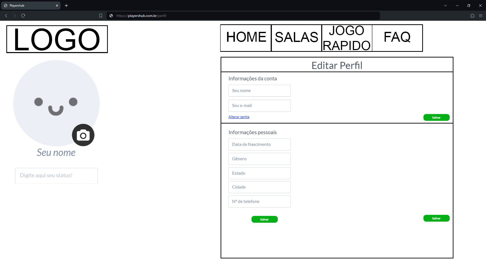

Introdução
PlayersHub foi concebido com o objetivo de revolucionar a forma como os jogadores de jogos online encontram e formam equipes. Nossa plataforma visa não apenas facilitar essa interação, mas também criar um ambiente mais limpo, amigável e justo para todos os nossos usuários. Enfrentamos os desafios comuns de disponibilidade, toxicidade e falta de consenso, oferecendo uma solução gratuita e eficiente que promove uma experiência de jogo mais positiva e satisfatória.
Informações Gerais
- Projeto: Playershub
- Repositório GitHub: Link
- Membros da equipe:
Contexto
Detalhes sobre o espaço de problema, justificativas e os objetivos do projeto.
Problema
Os jogadores de jogos online enfrentam diversos desafios ao tentar formar equipes, especialmente em ambientes competitivos. Entre os problemas principais estão a dificuldade em encontrar jogadores com disponibilidade compatível, o ambiente de jogo tóxico, que desmotiva a formação de equipes estáveis e harmoniosas, a falta de consenso e coordenação entre os jogadores, prejudicando a experiência de jogo, e a dificuldade de encontrar jogadores com habilidades e objetivos compatíveis. Além disso, há uma carência de plataformas dedicadas a facilitar essa formação de equipes, o que agrava ainda mais a frustração dos jogadores. Essas questões impactam negativamente a experiência dos jogadores, tornando a formação de equipes uma tarefa árdua e muitas vezes frustrante.
Objetivos
O projeto PlayersHub tem como objetivo principal facilitar a formação de equipes compatíveis em termos de disponibilidade, habilidades e objetivos. Além disso, visa promover um ambiente de jogo mais saudável e colaborativo, fornecendo ferramentas que melhorem a comunicação e coordenação entre os jogadores. Outro objetivo importante é reduzir o tempo necessário para encontrar partidas adequadas, aumentando a satisfação dos usuários. Ao atingir esses objetivos, PlayersHub busca proporcionar uma experiência de jogo mais agradável e eficiente para todos os seus usuários. Adicionalmente, o PlayersHub se compromete a ser uma plataforma gratuita, atendendo a um dos principais conselhos recebidos durante as entrevistas com os jogadores.
Justificativa
A necessidade de uma plataforma como o PlayersHub é justificada por diversos fatores. Primeiramente, o crescimento dos eSports tem aumentado a demanda por plataformas que ajudem na formação de equipes. Além disso, muitos jogadores desistem ou ficam frustrados devido ao comportamento tóxico de outros jogadores, e uma plataforma que promove um ambiente mais positivo pode atrair e reter mais usuários. A disponibilidade e compatibilidade também são questões críticas, pois encontrar jogadores com horários e objetivos compatíveis é um desafio significativo. PlayersHub pode ajudar a resolver essa questão, facilitando a formação de equipes estáveis e harmoniosas. A eficiência é um fator crucial, pois reduzir o tempo gasto na procura de equipes e partidas permite que os jogadores aproveitem mais o tempo jogando, o que aumenta a satisfação geral. A gratuidade da plataforma é outro ponto chave, uma vez que muitos jogadores recomendaram que a solução para esses problemas fosse acessível a todos, sem custos.
Público-alvo
O público-alvo do PlayersHub inclui estudantes e universitários que buscam um equilíbrio entre estudos, trabalho e lazer, e precisam de flexibilidade para encontrar equipes. Além disso, inclui profissionais que jogam nas horas livres e que precisam de equipes compatíveis com seus horários. Também abrange jogadores competitivos que buscam melhorar suas habilidades e encontrar equipes estáveis para competir em torneios, assim como novatos em jogos online que procuram um ambiente acolhedor e colaborativo para aprender e se desenvolver. Dessa forma, PlayersHub atende a uma ampla gama de jogadores, oferecendo soluções específicas para suas necessidades e desafios, e garantindo que todos possam acessar a plataforma de forma gratuita.
Concepção (Design Thinking)
Detalhes do processo de discovery do projeto.
Processo de Design Thinking
O arquivo que se segue apresenta o resultado desse processo.
Especificações do Projeto
Documentação das especificações do projeto.
Histórias de Usuários
Com base na análise das personas foram identificadas as seguintes histórias de usuários:
EU COMO...PERSONA |
QUERO/PRECISO...FUNCIONALIDADE |
PARA...MOTIVO/VALOR |
|---|---|---|
| Usuário do sistema | Denunciar outro usuário | Ajudar a manter a comunidade saudável |
| Administrador | Aplicar punições | Para manter a comunidade justa |
| Usuário do sistema | Procurar jogadores do meu nível | Me proporcionar novos desafios |
| Usuário do sistema | Procurar jogadores sociáveis | Pois eu só quero ter uma partida divertida |
Requisitos
As tabelas que se seguem apresentam os requisitos funcionais e não funcionais que detalham o escopo do projeto.
Com base nas Histórias de Usuário, enumere os requisitos da sua solução. Classifique esses requisitos em dois grupos:
- Requisitos Funcionais (RF): correspondem a uma funcionalidade que deve estar presente na plataforma (ex: cadastro de usuário).
- Requisitos Não Funcionais (RNF): correspondem a uma característica técnica, seja de usabilidade, desempenho, confiabilidade, segurança ou outro (ex: suporte a dispositivos iOS e Android).
Lembre-se que cada requisito deve corresponder à uma e somente uma característica alvo da sua solução. Além disso, certifique-se de que todos os aspectos capturados nas Histórias de Usuário foram cobertos.
Requisitos Funcionais
| ID | Descrição do Requisito | Prioridade |
|---|---|---|
| RF-001 | Permitir que o usuário se registre no aplicativo. | ALTA |
| RF-002 | Permitir que o usuário conecte a conta dos seus jogos no aplicativo. | ALTA |
| RF-003 | Criação de salas no aplicativo. | ALTA |
| RF-004 | Feed de atualizações de status dos amigos. | ALTA |
| RF-005 | Sistema de amizades no aplicativo. | MEDIA |
| RF-006 | Sistema de Chat nas Salas | ALTA |
| RF-007 | Sistema para encontrar partida rápida | ALTA |
Requisitos Não-Funcionais
| ID | Descrição do Requisito | Prioridade |
|---|---|---|
| RNF-001 | O sistema deve ser responsivo para rodar em um dispositivos móvel | ALTA |
| RNF-002 | Deve processar requisições do usuário em no máximo 3s | BAIXA |
| RNF-003 | O aplicativo deve ser projetado para suportar um grande número de usuários | ALTA |
| RNF-004 | O aplicativo deve ser extremamente seguro contra qualquer tipo de ataque | ALTA |
Projeto de Interface
Artefatos relacionados com a interface e a interacão do usuário na proposta de solução.
User/Screen Flow e Protótipo interativo
Artefatos relacionados com a interface e a interacão do usuário na solução proposta.
Userflow:

Protótipo interativo:
Wireframes
Protótipo de telas do sistema em baixa fidelidade (rascunhos).
Wireframe:


Metodologia
Detalhes sobre a organização do grupo e o ferramental empregado.
Ferramentas
Relação de ferramentas empregadas pelo grupo durante o projeto.
Liste as ferramentas empregadas no desenvolvimento do projeto, justificando a escolha delas, sempre que possível. Inclua itens como: (1) Editor de código, ferramentas de comunicação, ferramentas de diagramação, plataformas de hospedagem, entre outras.
| Ambiente | Plataforma | Link de Acesso |
|---|---|---|
| Processo de Design Thinking | Miro | Miro |
| Repositório de código | GitHub | Github |
| Protótipo Interativo | MarvelApp | MarvelApp |
Gestão do Projeto
Divisão de papéis no grupo e apresentação da estrutura da ferramenta de controle de tarefas (Kanban).

Controle de Versão
Estrutura do fluxo de trabalho no ambiente do GitHub.
Durante o desenvolvimento do projeto, foram efetuados commits regulares para registrar as alterações feitas nos arquivos do repositório.
Solução
Esta seção apresenta todos os detalhes da solução criada no projeto.
Video do Projeto
O vídeo a seguir traz uma apresentação do problema que a equipe está tratando e a proposta de solução.
Funcionalidades
Esta seção apresenta as funcionalidades da solução.
Funcionalidade 1 - Login/Cadastro e Perfil de Usuario
Permite o cadastro e login de usuários, e a alteração de dados do perfil do usuário.
- Estrutura de dados: Usuário
- Instruções de acesso:
- Abra o site e efetue o cadastro ou login
- Clique na sua foto de perfil para ser redirecionado ao seu perfil.
Funcionalidade 2 - Cadastro de Salas
Permite o cadastro de salas, com seleção de jogos, modos e níveis.
- Estrutura de dados: Salas
- Instruções de acesso:
- Abra o site e efetue o login
- Acesse a pagina de Salas clicando em "Salas"
- Em seguida, entre em uma sala ou crie uma
Funcionalidade 3 - Partida Rápida
Permite encontrar uma partida de maneira rápida, selecionando jogo, modo e nível.
- Estrutura de dados: Salas
- Instruções de acesso:
- Abra o site e efetue o login
- Acesse a pagina de jogo rapido clicando em "Jogo Rapido"
- Em seguida, selecione seus filtros desejados e clique em buscar.
Funcionalidade 4 - Partida Rápida
Permite encontrar uma partida de maneira rápida, selecionando jogo, modo e nível.
- Estrutura de dados: Salas
- Instruções de acesso:
- Abra o site e efetue o login
- Acesse a pagina de jogo rapido clicando em "Jogo Rapido"
- Em seguida, selecione seus filtros desejados e clique em buscar.
Funcionalidade 5 - Sistema de Amizade
Permite os jogadores se adicionarem.
- Estrutura de dados: Salas e Solicitações
- Instruções de acesso:
- Abra o site e efetue o login
- Acesse a pagina de inicial clicando em "Home"
- Em seguida, adicione seus amigos clicando no campo "Nome de Usuário" e no botão de adicionar, ou peça para seu amigo lhe enviar solicitação.
Funcionalidade 6 - Feed de atualizações dos amigos
Mostra o que seus amigos estão postando no site.
- Estrutura de dados: Status
- Instruções de acesso:
- Abra o site e efetue o login
- Acesse a pagina de inicial clicando em "Home"
- Em seguida, digite um status no campo "No que você está pensando?" e aperte ENTER ou peça para um amigo postar algo.
Estruturas de Dados
Descrição das estruturas de dados utilizadas na solução com exemplos no formato JSON.
Estrutura de Dados - Usuários
Registro dos usuários do sistema utilizados para login e para o perfil do sistema
{
"id": "6e2930e8-24c8-48f8-93c6-9493c255a7c9",
"login": "rian",
"senha": "123",
"nome": "Rian Eduardo",
"email": "rian@abc.com",
"steamID": "",
"profilePhoto": "https://robohash.org/6e2930e8-24c8-48f8-93c6-9493c255a7c9.png",
"nascimento": "2002-12-01",
"genero": "Masculino",
"estado": "MG",
"cidade": "Belo Horizonte",
"telefone": "",
"amigos": [
"9b4ec643-323d-4011-b39a-3aaf34beced1"
],
"status": "offline"
}
Estrutura de Dados - Salas
Registro das salas no sistema, juntamente com as mensagens enviadas no chat
{
"id": "_dj0p3q82v",
"nome": "Vamos jogar",
"jogo": "CS2",
"modo": "Competitivo",
"nivel": "grey",
"dono": "rian",
"jogadores": [
"6e2930e8-24c8-48f8-93c6-9493c255a7c9"
],
"capacidade": 5,
"sala": "publica",
"senha": "",
"mensagens": [
{
"autor": "rian",
"autorId": "6e2930e8-24c8-48f8-93c6-9493c255a7c9",
"horario": "24/6/2024 17:1",
"mensagem": "Estou na sala!"
}
]
}
Estrutura de Dados - Status
Registro de status, serve para salvar o que os usuários postam na página "Home".
{
"usuario": "admin",
"status": "ola",
"horario": "2024-06-23T11:48:19.424Z",
"id": 1
}
Estrutura de Dados - Solicitações
Registro de solicitações de amizades, para mostrar as solicitações pendentes.
{
"de": "fa32c412-0699-497f-82c0-5943d57f5ba5",
"para": "6e2930e8-24c8-48f8-93c6-9493c255a7c9",
"id": 1
}
Módulos e APIs
Esta seção apresenta os módulos e APIs utilizados na solução.
Images:
- Imgbb - https://pt-br.imgbb.com/
Fonts:
- Google Fonts - https://fonts.google.com/
Scripts:
- jQuery - http://www.jquery.com/
- Bootstrap 4 - http://getbootstrap.com/
- Steam API - https://steamcommunity.com/dev
FAQ
Perguntas e respostas comuns associadas ao projeto.
Referências Bibliográficas
Esta seção apresenta as referências bibliográficas utilizadas no projeto.
1 - HTML, CSS, JS. Aplicativo.
2 - Marvelapp. Protótipo interativo. Link
3 - Miro. Userflow. Link
4 - Adobe Photoshop. Wireframe. Link